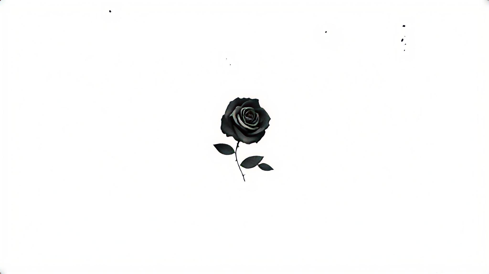
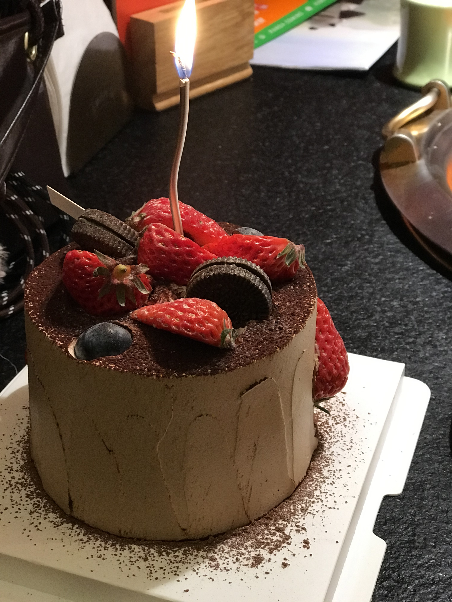
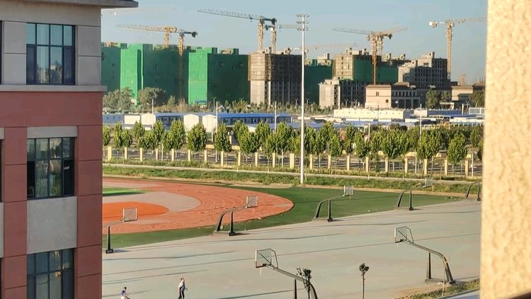

来到这个世界已经

7533 天
2006年02月26日

7533 天
2006年02月26日

145 天
丁未正月廿九
81 天
2027年01月10日

856 天
2024年06月08日
October 14, 2026
SpaceX 猎鹰9号火箭搭载货运龙飞船发射升空，卡纳维拉尔角。10月13日，SpaceX 货运龙飞船执行第35次国际空间站商业补给任务，共运送约2.86吨货物，包括…
农历九月初六
世界洗手日（Global Handwashing Day）
埃万杰利斯塔·托里拆利（Evangelista Torricelli，意大利物理学，水银气压计的发明者）
尼采（德国哲学家）
习仲勋（中国陕甘边区革命根据地的主要创建者和领导者之一）
马里奥·普佐（Mario Puzo，意大利裔美国作家，代表作：《教父》）
董存瑞
郭晶晶
拿破仑一世（Napoleon I）被流放到圣赫勒拿岛。
陈独秀被国民党逮捕入狱，直到1937年国共合作抗日以后获释。
查理·卓别林（Charlie Chaplin Jr.）自导自演的电影《大独裁者》上映。
北京「苏联展览馆」工程动工。苏联展览馆即后来的北京展览馆。
IBM 发布第一本「Fortran 编程参考手册」，是世界上首个现代高级编程语言。
第一座跨越长江的大桥「武汉长江大桥」正式通车，全长1670米。
「江南案」：华裔美籍作家刘宜良在美国遭到台湾当局情报部门雇佣的黑道分子刺杀身亡。
苏联领导人戈尔巴乔夫（Mikhail Gorbachev）因出台新政策推动冷战结束获诺贝尔和平奖。
中国第一艘载人航天飞船「神舟五号」搭载航天员杨利伟在酒泉卫星发射中心发射升空，进行了完整的太空飞行，于次日降落于四子王旗着陆场，标志着中国成为世界上第三个独立掌握载人航天技术的国家。